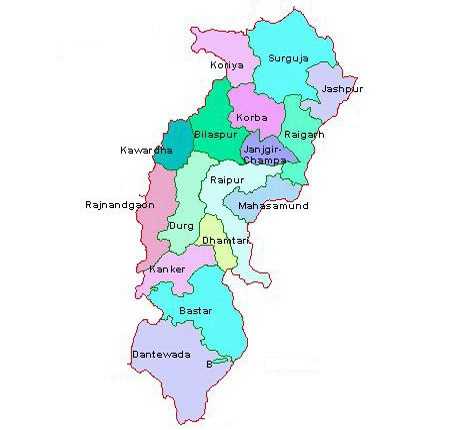

LET'S HAVE A LOOK AT THE TOUR MAP
BACK

WHERE TO VISIT , WHAT TO SEE?
SOME HOT PICKS(#HAVE_TO_VISIT)
- JAGDALPUR - NATURAL BEAUTI AND FOUNTAINS
- RAIPUR - MODERN CITY
- INDRAVATI NATIONAL PARK - ONLY TIGER RESERVE IN THE GREEN STATE OF CHATTISGARH
- CHITRAKOOT FALLS - MAJOR ECOTOURISM DESTINATION
- MAINPAT - UNDERRATED HILL STATION WITH GREEN PASTURES,DEEP VALLEYS
- CHARRE MARRE WATERFALLS - REFRESHING AND OFFBEAT PLACE
- GURU GHASIDAS NATIONAL PARK - BEAUTIFULLY PROTECTED RESERVE
- KANGER GHATI NATIONAL PARK - ONE OF THE DENSEST NATIONAL PARKS
- BARNAWAPARA WILDLIFE SANCTUARY
- TIRATHGARH FALLS - PARADISE OF WATERFALLS
- PURKHAUTI MUKTANGAN - OPEN AIR ART MUSEUM
- BHORAMDEO TEMPLE - RESEMBLANCE TO KONARK TEMPLE
- RAJIM - CHATTISGARH'S RICH CULTURAL HERITAGE
- MADKU DWEEP - BEAUTIFUL ISLAND SITUATED NEAR THE SILENT RIVER
- ACHANAKMAR WILDLIFE SANCTUARY - TIGER RESERVE
- MALHAR - MOST HISTORIC TOWN OF UTMOST ARCHEOLOGICAL PROMINENCE
- SIRPUR - VILLAGE WITH RICH CULTURAL HERITAGE
SOME_OTHER_ATTRACTIONS
- BHILAI - STEEL CITY
- DHAMTARI - TRIBAL CULTURE
- DANTEWADA - TEMPLE OF GODDESS DANTESHWARI AN INCARNATION OF SHAKTI
- GHATARANI WATERFALLS - PICNIC SPOT
- CHIRMIRI - JANNAT/HEAVEN OF CHATTISGARH